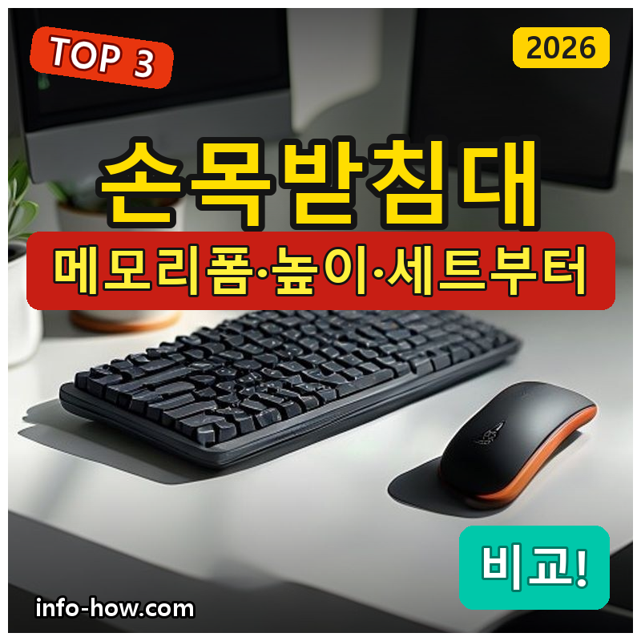
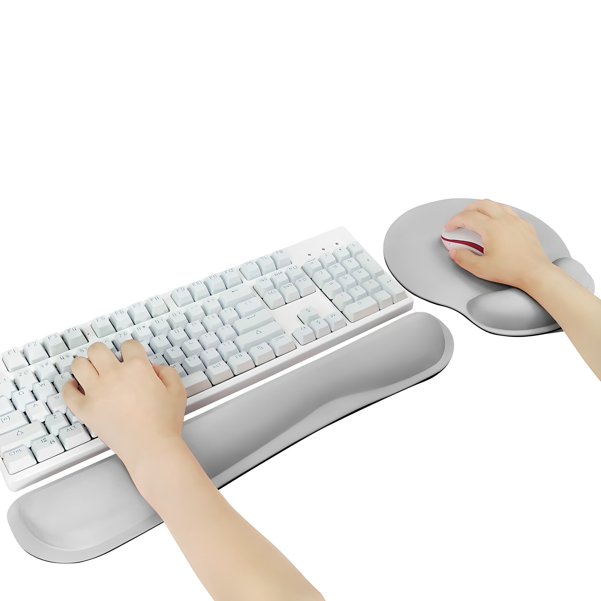
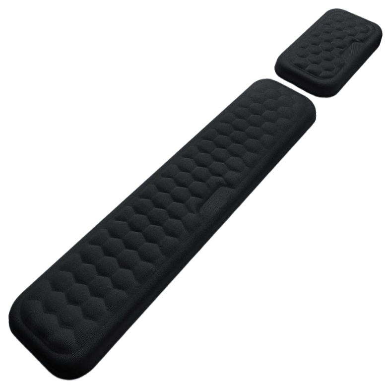
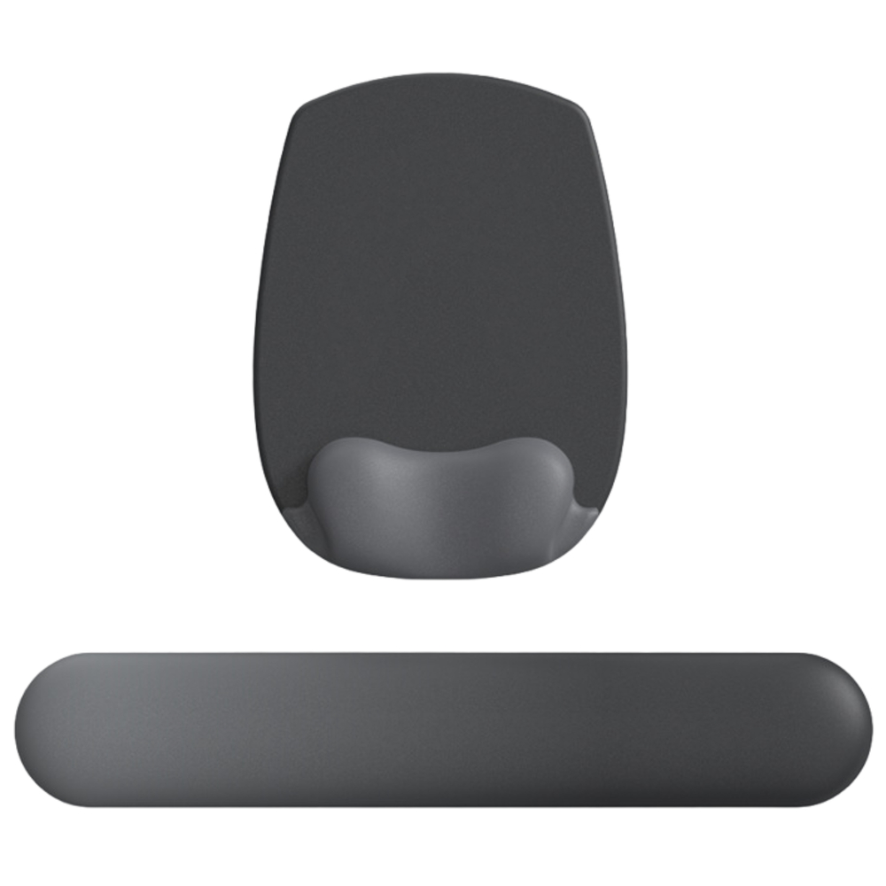

홈 › 제품리뷰 › 디지털/IT
키보드 손목받침대, 가성비 메모리폼이냐 세트냐
작성: 생활서식 모음 · 2026-07-25

파트너스 활동의 일환으로 일정액의 수수료를 지급받습니다
🛒 오늘의 쿠팡 특가 보러가기 →
키보드 손목받침대, 손목 뻐근하면 하나 갖고 싶죠?
핵심은 "소재(복원력)와 높이, 세트(마우스)" 3대 를
"저렴하게 하나" "키보드+마우스 세트" "부드러운 촉감"용도별 정답 까지 담았으니
📋 목차
키보드 손목받침대, 가성비 메모리폼이냐 세트냐 — 결론 먼저 스펙 비교표: 한눈에 보기 손목받침대 고를 때 봐야 할 4가지 하나냐 세트냐, 뭘 사야 할까? 자주 묻는 질문 (FAQ) 결론: 한 줄 요약
키보드 손목받침대, 가성비 메모리폼이냐 세트냐 — 결론 먼저
손목받침대는 "소재 복원력과 키보드+마우스 세트" 로 갈려요.워키즈 팜레스트 세트 가 무난합니다. 저렴하게 하나면 메모리폼+패드, 부드러운 촉감·완성도면 벨루어입니다.
1 입문·가성비 (가성비 초이스)
가성비

8천원대 메모리폼+패드
1. ikoikwan 메모리폼 손목받침+마우스패드
고급형은 아니어도
추천 대상
손목받침대를 처음 저렴하게 써볼 분 마우스패드까지 함께 필요한 분 가볍게 하나 마련하려는 분 장점
8천원대로 손목받침대+마우스패드를 함께 마련 메모리폼이라 손목을 부드럽게 받쳐줌 입문용으로 부담 없는 구성 단점
복원력·완성도는 상위 제품보다 아쉬울 수 있음 이 제품은 입문·가성비용 입니다. 키보드+마우스 팜레스트 세트면 2번, 부드러운 촉감·완성도면 3번으로 가세요. "저렴하게 하나"면 가성비 최고예요.
한줄 리뷰
"손목받침대 처음, 패드까지"면 8천원대로 충분합니다. 부드럽게 받쳐줘요. 세트·완성도면 2·3번을 보세요.
주요 스펙
제품: ikoikwan 메모리폼 손목받침+마우스패드 소재: 메모리폼 구성: 손목받침 + 마우스패드 배송: 로켓배송 가격: 약 7,900원 (변동 가능) ※ 실제 스펙·가격과 차이가 있을 수 있습니다
2 키보드+마우스 (베스트 초이스)
베스트

키보드+마우스 세트
2. 워키즈 메모리폼 팜레스트 세트
키보드+마우스 팜레스트 메모리폼 복원 손목 전체 케어
키보드도 마우스도 함께
추천 대상
키보드와 마우스 손목을 함께 받치려는 분 오래 타이핑·마우스를 쓰는 사무직 메모리폼 복원력을 원하는 분 장점
키보드+마우스 팜레스트 세트로 양쪽 손목을 함께 케어 메모리폼이라 눌렸다 복원되며 손목을 받쳐줌 오래 앉아 작업하는 사무·타이핑에 유용 단점
부드러운 촉감·프리미엄 마감은 3번 벨루어가 나음 저렴하게 하나면 1번, 부드러운 촉감·완성도면 3번 벨루어입니다. 2번은 "키보드+마우스 세트" 의 실속 구간 — 양쪽 손목을 받치기에 무난합니다.
한줄 리뷰
"타이핑도 마우스도 손목이 뻐근하다"면 팜레스트 세트가 좋습니다. 양쪽을 받쳐줘요. 부드러운 촉감·완성도면 3번을 보세요.
주요 스펙
제품: 워키즈 메모리폼 팜레스트 세트 구성: 키보드+마우스 손목받침 소재: 메모리폼 배송: 로켓배송 가격: 약 17,900원 (변동 가능) ※ 실제 스펙·가격과 차이가 있을 수 있습니다
3 촉감·완성도 (프리미엄)
프리미엄

벨루어 컴포트
3. 아라리오 벨루어 컴포트 손목받침 세트
벨루어 부드러운 촉감 키보드+마우스 세트 완성도 있는 마감
부드러운 벨루어 촉감에
추천 대상
부드러운 촉감·감성을 중시하는 분 키보드+마우스를 완성도 있게 받치려는 분 데스크 세팅을 깔끔하게 하려는 분 장점
벨루어 소재라 손목에 닿는 촉감이 부드러움 키보드+마우스 세트로 양쪽 손목을 케어 완성도 있는 마감으로 데스크 감성이 좋음 단점
가성비 제품보다 가격이 있음(그래도 2만원대) 저렴하게 하나면 1번, 실용 세트면 2번이 합리적입니다. 3번은 부드러운 촉감·완성도·감성 을 원하는 분에게 어울립니다.
한줄 리뷰
"기왕이면 촉감 좋고 예쁘게"면 벨루어 컴포트가 만족스럽습니다. 부드럽고 마감도 좋아요. 실용·가성비면 1·2번이 합리적입니다.
주요 스펙
제품: 아라리오 벨루어 컴포트 손목받침 세트 소재: 벨루어(부드러운 촉감) 구성: 키보드+마우스 배송: 로켓배송 가격: 약 21,500원 (변동 가능) ※ 실제 스펙·가격과 차이가 있을 수 있습니다
스펙 비교표: 한눈에 보기
가격·풍량·무게 중 본인에게 중요한 기준부터 보세요. "최고" 표시는 3제품 중 객관적 1위 값입니다.
← 좌우로 스크롤 →
손목받침대 고를 때 봐야 할 4가지
소재·높이만 챙겨도 "눌림·불편" 실패를 막습니다.
1) 소재 — 복원력
메모리폼: 손목에 밀착·복원되며 받쳐줌저가 스펀지는 금방 눌려 납작해질 수 있음 벨루어 등 겉감은 촉감·내구에 영향 2) 높이 — 키보드와 맞게
손목받침 높이가 키보드 높이와 맞아야 자연스러움 너무 높거나 낮으면 오히려 손목이 꺾임 키보드가 높으면(기계식 등) 높은 받침이 유리 3) 구성 — 키보드만? 마우스까지?
타이핑만이면 키보드용, 마우스도 오래 쓰면 세트 마우스 손목도 팜레스트가 있으면 부담이 줄어듦 마우스패드 포함이면 별도 구매가 줄어듦 4) 미끄럼·세척 — 편의
바닥 미끄럼 방지가 있으면 밀리지 않음 겉감이 닦거나 세탁되는지(위생) 땀·손때가 신경 쓰이면 관리 편한 소재 하나냐 세트냐, 뭘 사야 할까?
쓰는 기기와 촉감 취향만 정하면 답이 나옵니다.
저렴하게 하나+패드: 1번 ikoikwan → 8천원대키보드+마우스 세트: 2번 워키즈 팜레스트 → 양쪽촉감·완성도: 3번 아라리오 벨루어 → 부드럽게자주 묻는 질문 (FAQ)
Q1. 손목받침대가 정말 손목에 도움이 되나요? 올바른 높이로 쓰면 손목 부담을 줄이는 데 도움이 됩니다. 키보드·마우스를 쓸 때 손목이 아래로 꺾이거나 책상 모서리에 눌리면 피로·부담이 생기는데, 손목받침이 손목을 자연스러운 높이로 받쳐 이를 완화합니다. 다만 높이가 안 맞거나 손목을 과하게 올리면 오히려 불편할 수 있으니, 키보드 높이에 맞는 받침을 고르고 손목이 자연스러운 자세가 되게 쓰는 것이 중요합니다.
Q2. 메모리폼이랑 일반 스펀지, 차이가 큰가요? 복원력과 내구에서 차이가 납니다. 메모리폼은 눌렸다가 서서히 복원되며 손목을 부드럽게 받쳐주고 오래 형태를 유지하는 편입니다. 저가 일반 스펀지는 처음엔 푹신해도 금방 눌려 납작해져 받침 역할을 잃기 쉽습니다. 오래 쓸 거라면 메모리폼 소재가 유리하고, 겉감(벨루어 등)이 좋으면 촉감·내구도 나아집니다.
Q3. 손목받침 높이는 어떻게 맞추나요? 키보드 높이와 비슷하게 맞추는 것이 기본입니다. 손목받침이 키보드 앞턱 높이와 비슷해야 손목이 수평에 가깝게 유지돼 편합니다. 너무 높으면 손목이 위로 꺾이고, 너무 낮으면 아래로 꺾여 오히려 부담이 됩니다. 기계식 키보드처럼 높은 키보드는 높은 받침이 맞고, 낮은 키보드는 얇은 받침이 맞습니다. 실제 써보며 손목이 자연스러운 높이를 찾으세요.
Q4. 키보드용과 마우스용을 따로 사야 하나요? 오래 쓰면 둘 다 있는 게 좋습니다. 타이핑만 오래 하면 키보드용이 중요하지만, 마우스도 오래 쓰면 마우스 손목도 부담이 되므로 팜레스트 세트(키보드+마우스)가 양쪽을 함께 케어해 편합니다. 마우스 사용이 적으면 키보드용만으로도 충분합니다. 세트로 사면 따로 사는 것보다 깔끔하고 통일감이 있습니다.
Q5. 손목받침대도 청소·관리가 필요한가요? 땀·손때가 닿는 부위라 관리하면 위생적입니다. 겉감이 벨루어·패브릭이면 먼지·손때가 묻을 수 있어, 닦거나 세탁이 되는 제품이 관리에 편합니다. 젤·메모리폼 제품은 겉을 닦아 관리합니다. 오래 쓰면 눌리거나 오염될 수 있으니, 세척 가능 여부와 겉감 재질을 확인하면 위생적으로 오래 쓸 수 있습니다.
결론: 한 줄 요약
1) ikoikwan 메모리폼+패드 — 약 7,900원 / 입문·가성비. 8천원대, 패드 포함.2) 워키즈 팜레스트 세트 — 약 17,900원 / 키보드+마우스. 양쪽 손목 케어.3) 아라리오 벨루어 컴포트 — 약 21,500원 / 촉감·완성도. 부드러운 벨루어.이 포스팅은 쿠팡 파트너스 활동의 일환으로, 이에 따른 일정액의 수수료를 제공받습니다.